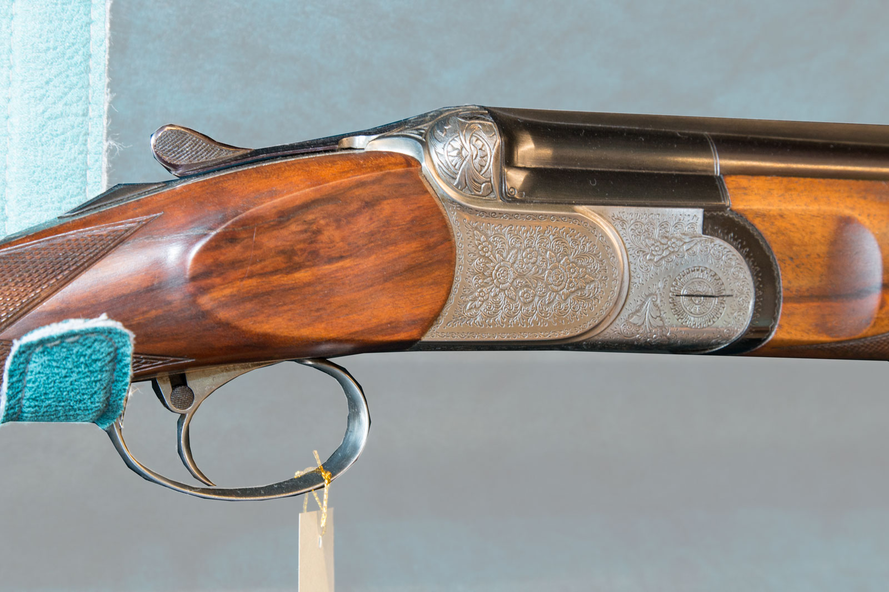

Private Consultation
Focused guidance shaped around your interests.
A curated collection of fine shotguns, sporting rifles and field equipment, presented with personal guidance in our Beirut showroom.
Selected sporting pieces defined by craftsmanship, balance and enduring character.
Established sporting names and specialist makers represented across the current collection.
Explore the collection by sporting format and intended field use.

Explore fine sporting arms, heritage pieces and field equipment with discreet, personal guidance.

Engraved steel, balanced actions and carefully shaped walnut express the character of fine sporting arms—presented without exaggerated claims.
Explore the CollectionFocused guidance shaped around your interests.
A considered selection from established makers.
Review details and availability in person.
Continued support for appropriate product questions.
Arrange a private consultation and explore the current selection with personal guidance from the LE FUSIL team.